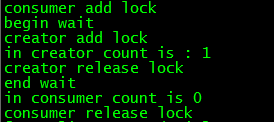
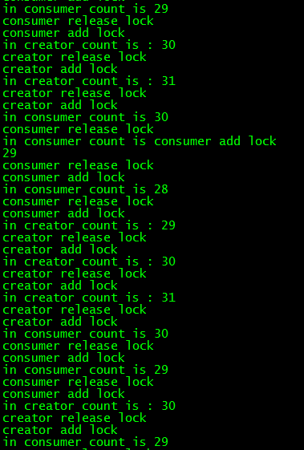

近期学习了线程等待和激活的相关知识。
先介绍几个api：
pthread_cond_t表示多线程的条件变量，用于控制线程等待和就绪的条件。
一：条件变量的初始化：
条件变量和互斥锁一样，都有静态动态两种创建方式，
静态方式使用PTHREAD_COND_INITIALIZER常量初始化。
pthread_cond_t cond = PTHREAD_COND_INITIALIZER;
动态方式初始化：
1 首先要new或者malloc一个pthread_cond_t类型变量，
用完后记得delete或者free掉。
2动态方式
调用pthread_cond_init()函数，API定义如下：
int pthread_cond_init(pthread_cond_t *cond, pthread_condattr_t *cond_attr);
二：条件变量的销毁
注销一个条件变量需要调用pthread_cond_destroy()，只有在没有线程在该条件变量上等待的时候才能注销这个条件变量，否则返回EBUSY。
因为Linux实现的条件变量没有分配什么资源，所以注销动作只包括检查是否有等待线程。API定义如下：
int pthread_cond_destroy(pthread_cond_t *cond)
new开辟的pthread_cond_t记得在调用pthread_cond_destroy()后调用delete或者free销毁掉。
三：等待和触发
1条件等待
int pthread_cond_wait(pthread_cond_t * cond, pthread_mutex_t * mutex);
2时间等待
int pthread_cond_timedwait(pthread_cond_t *cond, pthread_mutex_t *mutex, const struct timespec *abstime);
其中计时等待方式如果在给定时刻前条件没有满足，则返回ETIMEOUT，结束等待，
其中abstime以与time()系统调用相同意义的绝对时间形式出现，0表示格林尼治时间1970年1月1日0时0分0秒。
无论哪种等待方式，都必须和一个互斥锁配合，以防止多个线程同时请求pthread_cond_wait()（或pthread_cond_timedwait()，下同）
的竞争条件（Race Condition）。mutex互斥锁必须是普通锁（PTHREAD_MUTEX_TIMED_NP）
或者适应锁（PTHREAD_MUTEX_ADAPTIVE_NP），且在调用pthread_cond_wait()前必须由本线程加锁（pthread_mutex_lock()），
而在更新条件等待队列以前，mutex保持锁定状态，并在线程挂起进入等待前解锁。
在条件满足从而离开pthread_cond_wait()之前，mutex将被重新加锁，以与进入pthread_cond_wait()前的加锁动作对应。
使用pthread_cond_wait方式如下：
`pthread _mutex_lock(&mutex)`
`while或if(线程执行的条件不成立)`
`pthread_cond_wait(&cond, &mutex);`
`线程执行`
`pthread_mutex_unlock(&mutex);`
3激发条件有两种形式
pthread_cond_signal()激活一个等待该条件的线程，存在多个等待线程时按入队顺序激活其中一个；而pthread_cond_broadcast()则激活所有等待线程。
上面就是多线程条件变量的基础知识，下面着重阐述下为什么调用pthread_cond_wait之前要加锁，以及pthread_cond_wait内部
调用了什么。
首先解释为什么在等待前加锁，因为线程隶属于进程，线程共享进程的资源，如果不进行加锁，就会造成多个线程同时（相对意义的同时， 可能一个线程在函数A中更改此共享资源，此时函数A没结束，另一个线程也访问了这个共享资源）访问这块共享的资源，如果对临界区的内容进行更改，那么两个线程就会造成数据的不准确。所以在更改临界资源的时候要枷锁。而调用
pthread_cond_wait之前要加锁也是为了避免多个线程竞争一个条件，造成共享的资源被多个线程更改。所以需要互斥的访问共有资源，那么在pthread_cond_wait之前需要加锁，避免别的线程更改共有资源。
接下来思考pthread_cond_wait内部做了哪些操作。
在pthread_cond_wait调用之前，线程调用pthread_mutex_lock,设置锁，如果条件不满足，那么该线程处于阻塞等待的状态。别的线程 发现条件满足后会调用pthread_cond_signal或pthread_cond_broadcast通知他。那么问题出来了，如果该线程不解锁，别的线程是没办法
更改共享资源的，也就没办法设置条件变量使其满足该线程的等待条件，出现死锁。所以，pthread_cond_wait会在内部进行解锁操作。别的
线程可以访问共享资源，更改条件触发该线程，是该线程从阻塞状态变为就绪。慢一点，还有一个重要的步骤，pthread_cond_wait会将该线程
放到线程等待队列里，那么是在放到等待队列之前解锁还是放到等待队列之后才解锁呢？
对于这点apue给出的解释：The mutex passed to pthread_cond_wait protects the condition.The caller passes it locked to
the function, which then atomically places the calling thread on the list of threads waiting for the condition and unlocks
the mutex. This closes the window between the time that the condition is checked and the time that the
thread goes to sleep waiting for the condition to change, so that the thread doesn’t miss a change in the condition.
When pthread_cond_wait returns, the mutex is again locked.
这段话的意思是mutex传递给pthread_cond_wait 用于保护条件，调用者将mutex传递给pthread_cond_wait，
pthread_cond_wait 会自动将调用该函数的线程放到线程等待队列上，等待条件并且解锁。这种做法关闭了一段间隙，
这段间隙就是在我们检测条件的时刻和将线程放到等待队列休眠的时刻之间，这么做该线程不会错过条件的改变。而当
pthread_cond_wait 返回时，mutex又被上锁了。
所以，pthread_cond_wait内部的操作顺序是将线程放到等待队列，然后解锁，等条件满足时进行加锁，然后返回。
整理下pthread_cond_wait内部操作
1，线程放在等待队列上，解锁
2，等待 pthread_cond_signal或者pthread_cond_broadcast信号之后去竞争锁
3，若竞争到互斥锁则加锁。
使用流程
等待线程：
pthread_mutex_lock(&mutex);
while或if(条件不满足)
pthread_cond_wait(&cond, &mutex);
//处理共享资源
pthread_mutex_unlock(&mutex);
激活线程：
pthread_mutex_lock(&mutex);
pthread_cond_signal(&cond);
pthread_mutex_unlock(&mutex);
下面写了一个例子
1 |
|
因为消费者线程先跑起来，会等待生产者增加count数量，所以打印输出结果如下

下面将消费者和生产者线程增加几个，creater和consumer内部用循环处理，这样就能看出效果了。
1 | void * creator(void * arg) |
截取一部分结果截图，可以看出数字是连续变动的，而且加锁解锁内数字才变动，说明我们对锁和条件变量使用合理。

我的公众号，关注下吧。